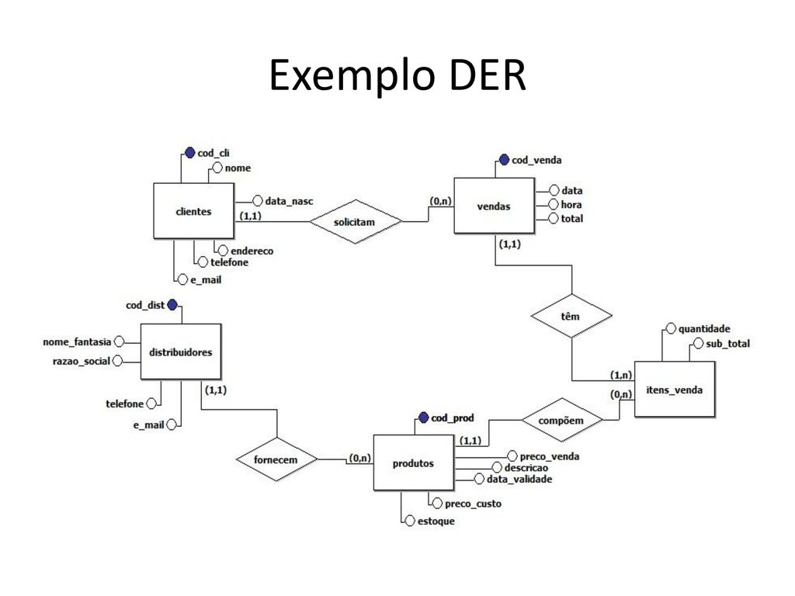

Transforments 
- conceitos
- modelagem
Antes de entender o que é um banco de dados, é importante saber a diferença entre as palavras “dados” e “informações”. Os dados são os fatos brutos, em sua forma primária, e podem não fazer nenhum sentido quando estão isolados; já as informações são o agrupamento de dados organizados, de forma que façam sentido e gerem algum conhecimento.
Segundo Korth, um banco de dados “é uma coleção de dados inter-relacionados, representando informações sobre um domínio específico”, ou seja, sempre que for possível agrupar informações que se relacionam e tratam de um mesmo assunto, posso dizer que tenho um banco de dados.”
Podemos exemplificar situações clássicas como uma lista telefônica, um catálogo de CDs ou um sistema de controle de RH de uma empresa.
Já um sistema de gerenciamento de banco de dados (SGBD) é um software que possui recursos capazes de manipular as informações do banco de dados e interagir com o usuário. Exemplos de SGBDs são: Oracle, SQL Server, DB2, Postgre, MySQL, o próprio Access ou Paradox, entre outros.
A informação é muitas vezes a coisa mais valiosa das empresas, mantê-las e poder acessá-las sempre que necessário é primordial para tomar decisões importantes. Mas controlar o acesso a essas informações também é importantíssimo. Já pensou se elas caíssem em mãos erradas? E a perda de informações? Já imaginou se estragasse o HD do servidor onde está o banco de dados? Backup é uma forma de garantir que informações não serão perdidas.
Analisando os 5 primeiros SGBDs, temos Oracle em 1º lugar com um pequeno aumento no mês de março comparado com o mês de abril de 2020. O MySQL se mantém no 2º lugar e pode aparecer em 2020 como um concorrente forte para o primeiro lugar. Em 3º lugar está a Microsoft SQL Server, que vem caindo de pontuação em relação a março/2019. O PostgreSQL aparece em 4º lugar, já o MongoDB um banco de dados não SQL (NoSQL) permanece em 5º lugar.
O sistema de banco de dados deve garantir uma visão totalmente abstrata do banco de dados para o usuário, ou seja, para o usuário do banco de dados pouco importa qual unidade de armazenamento está sendo usada para guardar seus dados, contanto que os mesmos estejam disponíveis no momento necessário.
Esta abstração se dá em três níveis:
Um modelo de dados são as ferramentas que o profissional escolhe para a organização das informações e descrição de dados, relacionamentos...
Um projeto contém duas fases: Modelo Conceitual e Projeto Lógico.
Essas etapas preparam o banco de dados antes dele existir, evitando erros e facilitando possíveis manutenções futuras.
O modelo conceitual é a descrição do BD de maneira independente ao SGBD, ou seja, define quais os dados que aparecerão no BD, mas sem se importar com a implementação que se dará ao BD. Desta forma, há uma abstração em nível de SGBD. Uma das técnicas mais utilizadas dentre os profissionais da área é a abordagem entidade-relacionamento (ER), onde o modelo é representado graficamente através do diagrama entidade-relacionamento (DER).
O modelo lógico descreve o BD no nível do SGBD, ou seja, depende do tipo particular de SGBD que será usado. Não podemos confundir com o Software que será usado. O tipo de SGBD que o modelo lógico trata é se ele é relacional, orientado a objetos, hierárquico etc. O SGBD relacional é o mais conhecido. Nele, os dados são organizados em tabelas.
Os modelos de dados são ferramentas que permitem demonstrar como serão construídas as estruturas de dados que darão suporte aos processos de negócios, como os dados estarão organizados e quais os relacionamentos que pretendemos estabelecer entre eles.
Os principais objetivos da modelagem de dados são: representar o ambiente observado, documentar e normalizar, fornecer processos de validação e observar processos de relacionamentos entre objetos.
Embora Modelo Lógicos e Modelos Físico parecerem similares, e eles de fato são, o nível de detalhes que eles modelam pode ser significativamente diferente. Isso porque o objetivo de cada diagrama é diferente – podemos usar um Modelo Lógicos para explorar conceitos do domínio com os envolvidos no projeto e Modelos Físico para definir o projeto do banco de dados.